Ghi hình, điểm danh và quản lý lớp học ngay trên Google MeetRecord, take attendance and manage classes right on Google Meet
Không tài khoản, không đám mây, không theo dõi. Mọi bản ghi và dữ liệu lớp nằm ngay trên máy của bạn.No account, no cloud, no tracking. Every recording and class record stays on your own computer.

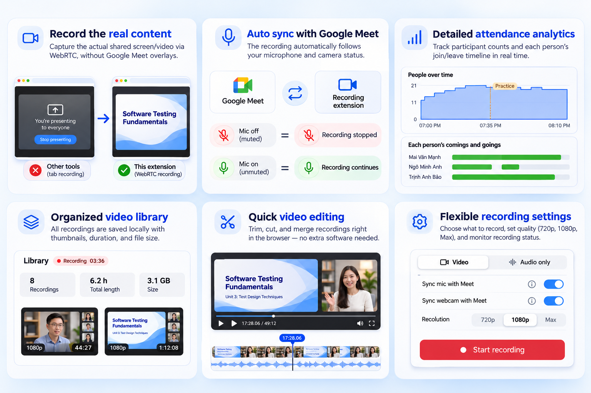
Mọi thứ cho buổi học trực tuyếnEverything for online lessons
Từ lúc bấm ghi đến lúc có báo cáo chuyên cần, không cần rời trình duyệt.From pressing record to an attendance report, without leaving your browser.
Chọn nguồn và thiết bị trước khi ghiSet up your recording before you start
Chọn chế độ video hoặc chỉ âm thanh, kiểm tra micro và webcam, rồi chọn chất lượng phù hợp.Choose video or audio-only mode, check your mic and webcam, and set the recording quality.

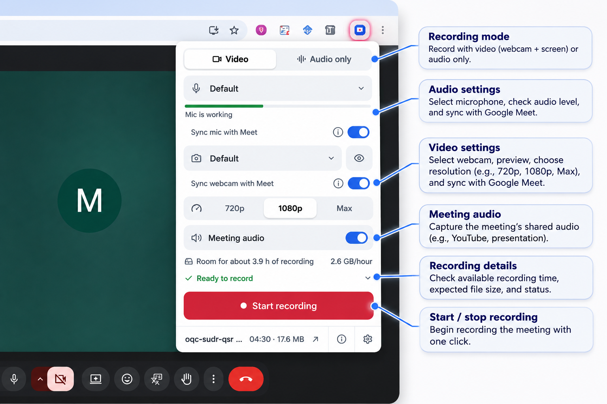
Điều khiển bản ghi ngay trong cuộc họpControl your recording inside the meeting
Dùng thanh nổi để theo dõi thời gian, tạm dừng hoặc đánh dấu những đoạn cần tìm lại.Use the floating toolbar to check elapsed time, pause, or mark moments to find later.

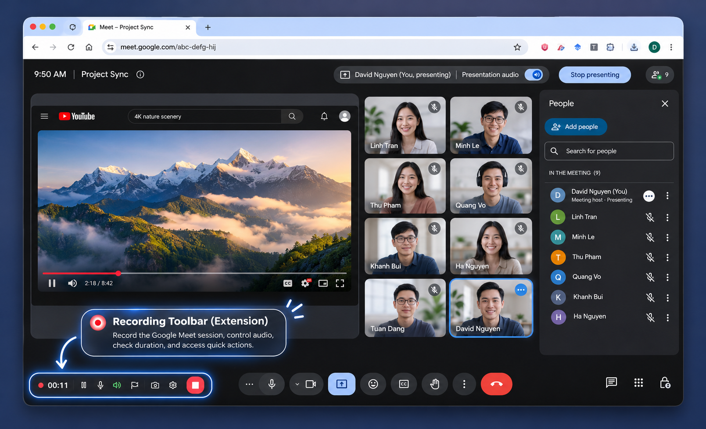
Ghi nội dung đang trình chiếuCapture the shared presentation
Khi Meet cung cấp luồng trình chiếu tương thích, tiện ích có thể ghi trực tiếp nội dung chia sẻ qua WebRTC.When Meet exposes a compatible presentation stream, the extension can capture the shared content directly through WebRTC.

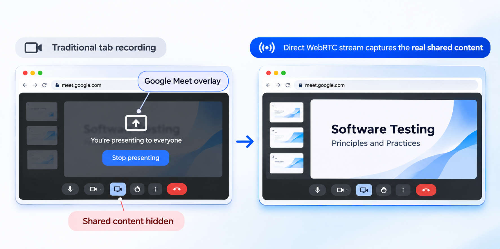
Micro bản ghi theo trạng thái trên MeetRecording mic follows Google Meet
Khi bật đồng bộ, tắt mic trên Meet cũng tắt tiếng micro trong bản ghi. Âm thanh cuộc họp có cài đặt riêng.With sync enabled, muting yourself on Meet also mutes your recording mic. Meeting audio has its own setting.

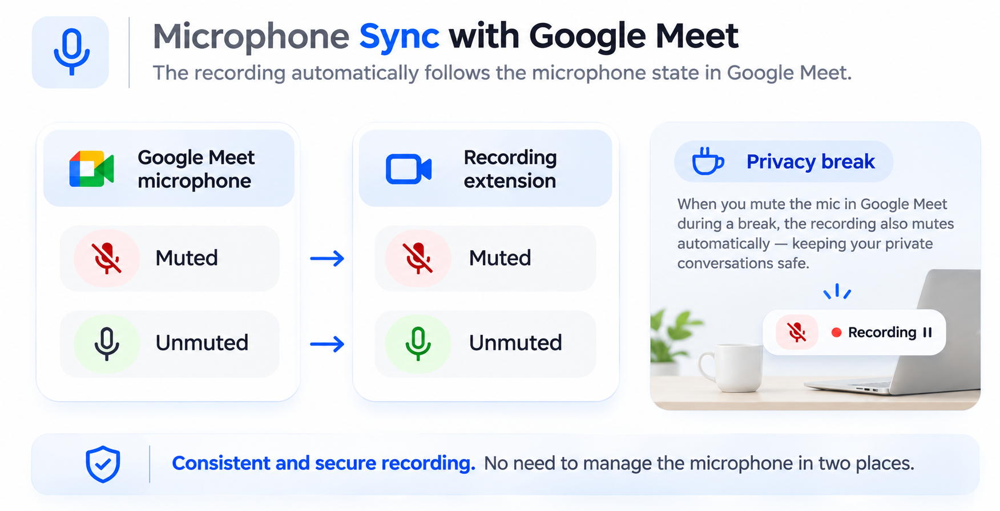
Xem lại lịch sử các buổi họcReview attendance across meetings
Xem số buổi, số người tham gia, tỷ lệ và thời lượng có mặt từ dữ liệu điểm danh đã ghi nhận.Review meeting counts, participants, attendance rates, and time present from recorded attendance data.

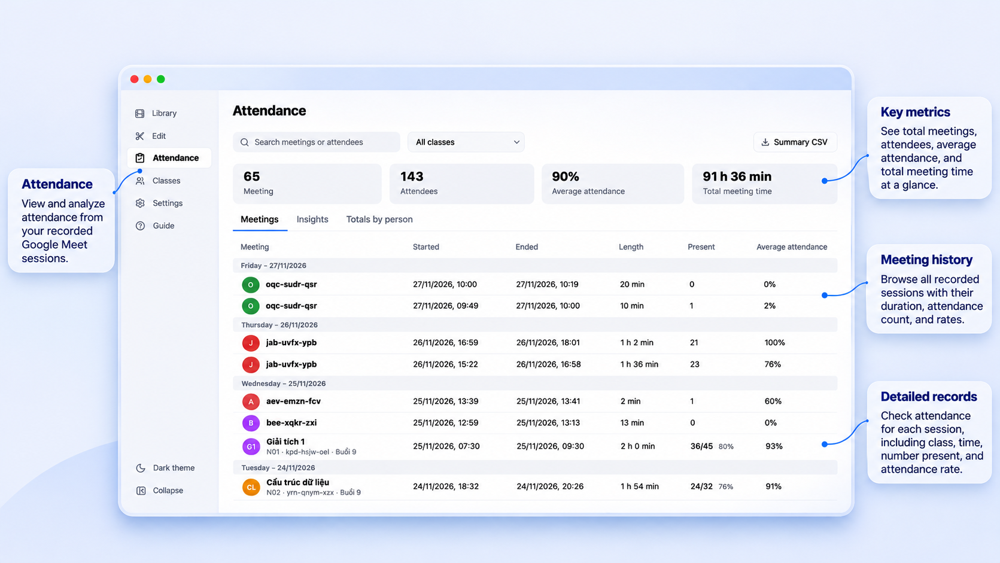
Xem ai có mặt theo từng thời điểmSee who attended and when
Biểu đồ cho thấy số người có mặt theo thời gian. Thanh thời lượng hiển thị các khoảng vào và rời buổi học của từng người.See participant counts over time and each person’s join and leave intervals.

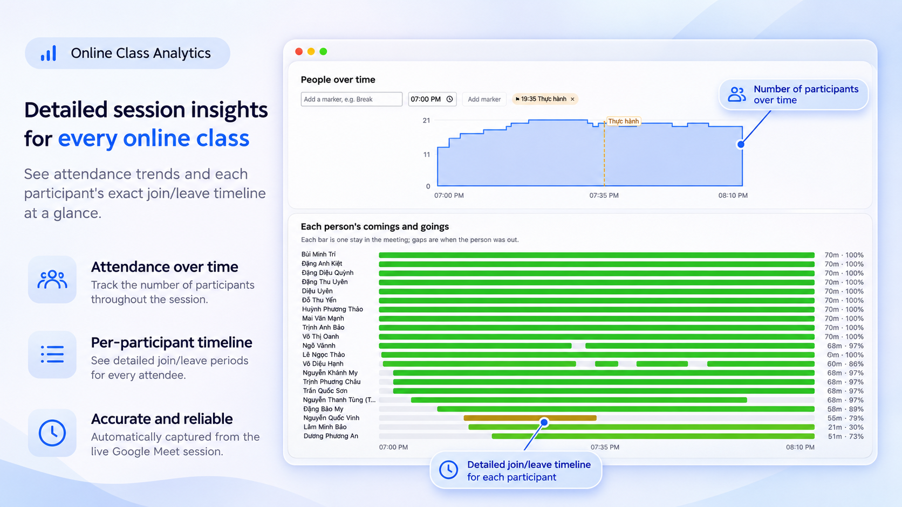

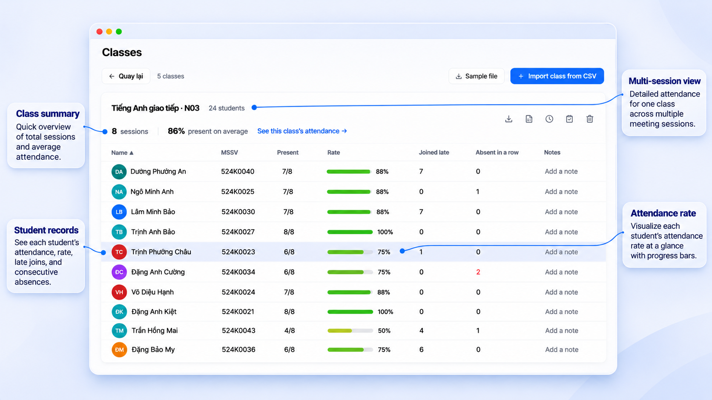

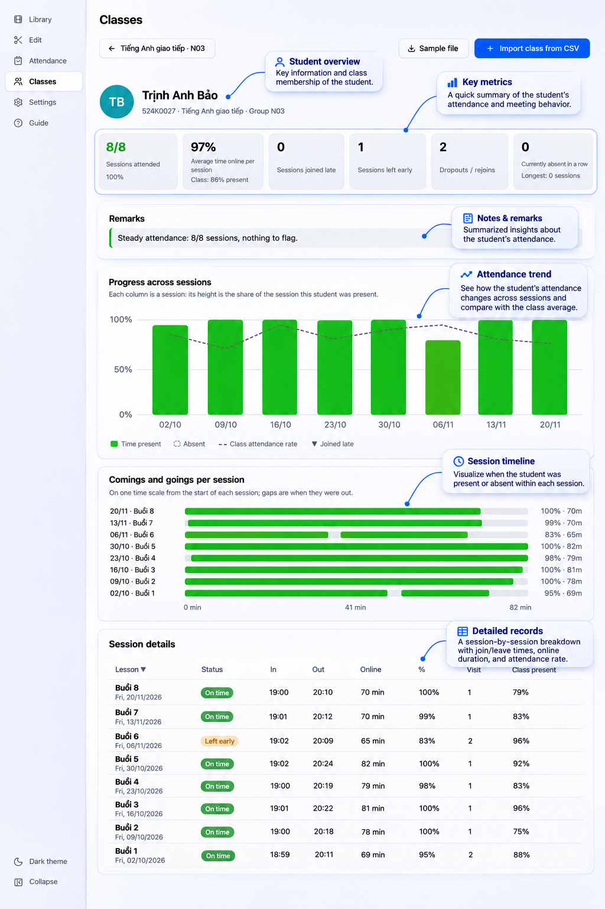
Tìm và quản lý bản ghiFind and manage recordings
Duyệt ảnh thu nhỏ, tìm bản ghi theo tên và xem dung lượng trước khi xuất.Browse thumbnails, search recordings by name, and check storage before exporting.

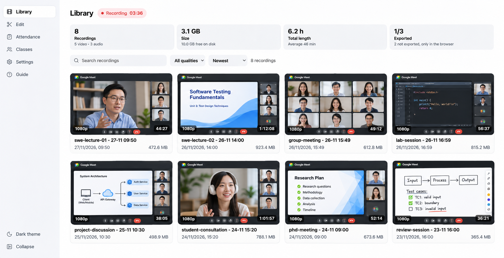
Cắt gọn bài giảng trước khi chia sẻTrim a lesson before sharing
Xem lại video, chọn đoạn cần giữ và chỉnh khung hình trên timeline.Preview the video, choose the sections to keep, and adjust the crop in the editor.

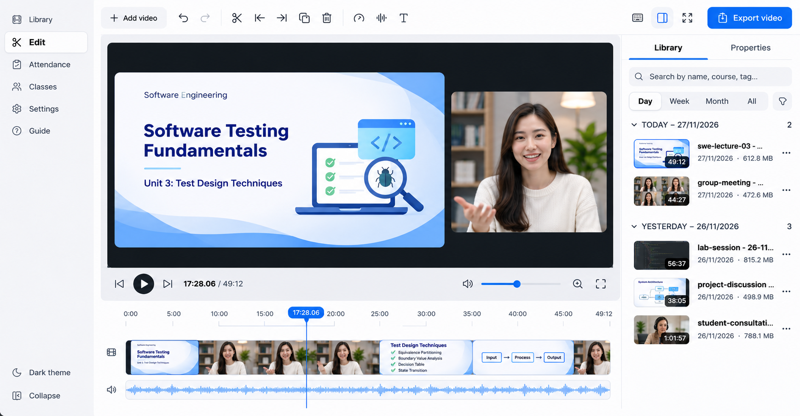
Và còn nhiều chi tiết nhỏ đáng giáAnd plenty of small details that matter
Những thứ bạn sẽ nhận ra ngay trong buổi học đầu tiên.The things you'll notice in your very first lesson.
Chế độ mic riêng tưPrivacy mute
Tắt tiếng bản ghi ngay bằng một phím, bất kể trạng thái trên Meet.Silence the recording instantly with one key, whatever Meet says.
Đánh dấu mốcMarkers
Gắn dấu vào những khoảnh khắc quan trọng để tìm lại nhanh.Drop a marker on key moments to find them again fast.
Âm thanh tab riêngSeparate tab audio
Âm thanh học viên có cổng điều khiển độc lập với mic của bạn.Student audio has its own gate, independent of your mic.
Khôi phục sự cốCrash recovery
Bản ghi được lưu dần, nên mất điện hay lỗi trình duyệt vẫn cứu được.Recordings are saved incrementally so a crash doesn't lose the lesson.
Xuất hàng loạtBatch export
Chọn nhiều bản ghi và xuất một lượt.Select many recordings and export in one go.
Sáng & tốiLight & dark
Giao diện tự theo chế độ của hệ thống.The interface follows your system theme.
Song ngữBilingual
Tiếng Việt và English, đổi bất cứ lúc nào.Vietnamese and English, switch any time.
100% cục bộ100% local
Không tài khoản, không đám mây, không thống kê, không mã từ xa.No account, no cloud, no analytics, no remote code.
Phím tắt nhanhQuick shortcuts
Điều khiển bản ghi mà không rời cuộc họp. Đổi phím tại chrome://extensions/shortcuts.Control the recording without leaving the meeting. Change keys at chrome://extensions/shortcuts.
Dành cho ai?Who is it for?
Dành cho bất kỳ ai học, dạy hoặc họp trên Google Meet.For anyone who teaches, learns or meets on Google Meet.
Giáo viên & giảng viênTeachers & lecturers
Ghi buổi dạy, điểm danh lớp và gửi lại bài giảng cho học viên vắng.Record lessons, take class attendance and share the recording with absentees.
Trung tâm & đào tạoTraining centres
Quản lý nhiều lớp, báo cáo chuyên cần gọn gàng theo từng buổi.Manage several classes with tidy per-session attendance reports.
Học viênStudents
Lưu lại buổi học để xem lại, cắt gọn phần cần ôn.Keep lessons to rewatch and trim the parts you need to revise.
Nhóm làm việcTeams
Ghi lại họp, đánh dấu quyết định quan trọng và giữ dữ liệu trong máy.Capture meetings, mark key decisions and keep the data on your machine.
Bắt đầu trong một phútStart in a minute
Không cần đăng ký hay cấu hình phức tạp.No sign-up and no complicated setup.
- Cài extension từ Chrome Web Store và ghim biểu tượng lên thanh công cụ.Install the extension from the Chrome Web Store and pin its icon.
- Mở Google Meet hoặc bất kỳ trang nào, bấm biểu tượng và chọn nguồn ghi.Open Google Meet or any page, click the icon and pick what to record.
- Bấm “Bắt đầu ghi”. Thanh điều khiển nhỏ xuất hiện trên Meet để tạm dừng, tắt mic hay đánh dấu.Press “Start recording”. A small controller appears on Meet for pause, mute and markers.
- Dừng và xuất. Mở Thư viện để xem, chỉnh sửa, xuất MP4 và tải báo cáo điểm danh.Stop and export. Open the Library to review, edit, export MP4 and download attendance reports.
Quyền riêng tư là mặc địnhPrivate by design
Extension không có máy chủ. Không gì bạn ghi, gõ hay nhập được gửi đi đâu.The extension has no server. Nothing you record, type or import is sent anywhere.
| QuyềnPermission | Dùng đểWhy |
|---|---|
tabCapture | Ghi âm thanh và hình của tab bạn chọn.Record audio and video of the tab you choose. |
desktopCapture | Ghi cửa sổ hoặc màn hình qua hộp chọn của Chrome.Record a window or screen via Chrome's own picker. |
activeTab, scripting | Gắn thanh điều khiển vào tab Meet sau khi bạn bấm extension.Attach controls to the Meet tab after you click the extension. |
storage | Lưu cài đặt và ngôn ngữ.Keep settings and language. |
offscreen | Giữ bản ghi chạy khi popup đóng.Keep a recording running when the popup closes. |
meet.google.com | Hiện thanh điều khiển và đọc tên người tham gia để điểm danh.Show controls and read participant names for attendance. |
Đọc chính sách quyền riêng tư đầy đủ →Read the full privacy policy →
FAQ
Bản ghi được lưu ở đâu?Where are recordings stored?
Trong bộ nhớ cục bộ của hồ sơ Chrome (IndexedDB). Xuất file khi bạn muốn giữ ngoài trình duyệt.In your Chrome profile's local storage (IndexedDB). Export a file whenever you want a copy outside the browser.
Có tải gì lên mạng không?Is anything uploaded?
Không. Không máy chủ, không thống kê, không quảng cáo, không mã từ xa.No. No server, no analytics, no ads, no remote code.
Có ghi lại thanh điều khiển của Meet không?Are Meet's own controls recorded?
Mặc định video được cắt phía trên thanh điều khiển nên các nút Meet không xuất hiện trong bản ghi. Có thể tắt trong Cài đặt.By default the video is cropped above the control bar so Meet's buttons stay out of the recording. You can turn this off in Settings.
Có ghi được trang không phải Meet không?Can it record pages other than Meet?
Có. Bạn có thể ghi bất kỳ tab, cửa sổ hoặc màn hình nào. Thanh điều khiển nổi và điểm danh chỉ hoạt động trên Google Meet.Yes. You can record any tab, window or screen. The floating controller and attendance work on Google Meet only.
Yêu cầu trình duyệt?Browser requirements?
Chrome (hoặc trình duyệt Chromium) bản 116 trở lên trên máy tính.Desktop Chrome (or a Chromium browser) version 116 or later.
Làm sao xóa dữ liệu?How do I delete my data?
Xóa từng bản ghi hoặc lớp trong Thư viện, hoặc gỡ extension / xóa dữ liệu trang để xóa tất cả.Delete a recording or class in the Library, or remove the extension / clear its site data to erase everything.
Liên hệ / báo lỗi?Contact / report a bug?
Sẵn sàng ghi buổi học tiếp theo?Ready to record your next lesson?
Cài trong vài giây. Không tài khoản, không đám mây, dữ liệu luôn ở trên máy bạn.Installs in seconds. No account, no cloud, your data stays on your machine.
Cài từ Chrome Web StoreAdd to Chrome